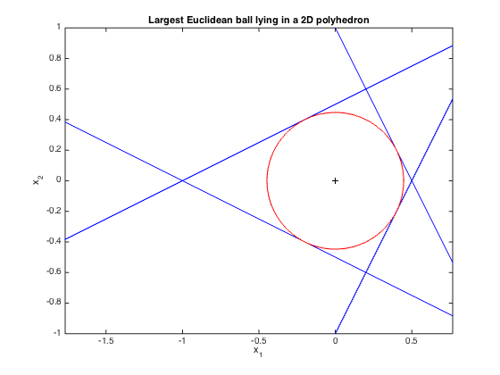

% Boyd & Vandenberghe, "Convex Optimization" % Joëlle Skaf - 08/16/05 % (a figure is generated) % % The goal is to find the largest Euclidean ball (i.e. its center and % radius) that lies in a polyhedron described by linear inequalites in this % fashion: P = {x : a_i'*x <= b_i, i=1,...,m} where x is in R^2 % Generate the input data a1 = [ 2; 1]; a2 = [ 2; -1]; a3 = [-1; 2]; a4 = [-1; -2]; b = ones(4,1); % Create and solve the model cvx_begin variable r(1) variable x_c(2) maximize ( r ) a1'*x_c + r*norm(a1,2) <= b(1); a2'*x_c + r*norm(a2,2) <= b(2); a3'*x_c + r*norm(a3,2) <= b(3); a4'*x_c + r*norm(a4,2) <= b(4); cvx_end % Generate the figure x = linspace(-2,2); theta = 0:pi/100:2*pi; plot( x, -x*a1(1)./a1(2) + b(1)./a1(2),'b-'); hold on plot( x, -x*a2(1)./a2(2) + b(2)./a2(2),'b-'); plot( x, -x*a3(1)./a3(2) + b(3)./a3(2),'b-'); plot( x, -x*a4(1)./a4(2) + b(4)./a4(2),'b-'); plot( x_c(1) + r*cos(theta), x_c(2) + r*sin(theta), 'r'); plot(x_c(1),x_c(2),'k+') xlabel('x_1') ylabel('x_2') title('Largest Euclidean ball lying in a 2D polyhedron'); axis([-1 1 -1 1]) axis equal
Calling SDPT3 4.0: 4 variables, 3 equality constraints
For improved efficiency, SDPT3 is solving the dual problem.
------------------------------------------------------------
num. of constraints = 3
dim. of linear var = 4
number of nearly dependent constraints = 1
To remove these constraints, re-run sqlp.m with OPTIONS.rmdepconstr = 1.
*******************************************************************
SDPT3: Infeasible path-following algorithms
*******************************************************************
version predcorr gam expon scale_data
NT 1 0.000 1 0
it pstep dstep pinfeas dinfeas gap prim-obj dual-obj cputime
-------------------------------------------------------------------
0|0.000|0.000|4.5e+01|6.0e+00|4.0e+02| 4.000000e+01 0.000000e+00| 0:0:00| chol 1 1
1|0.997|1.000|1.3e-01|6.7e-02|5.4e+00| 5.578925e-01 -3.869844e+00| 0:0:00| chol 1 1
2|1.000|1.000|7.0e-08|6.7e-03|1.9e-01| 4.472135e-01 2.566950e-01| 0:0:00| chol 1 1
3|1.000|0.989|2.7e-08|7.3e-04|2.1e-03| 4.472136e-01 4.455792e-01| 0:0:00| chol 1 1
4|1.000|0.989|7.4e-09|7.4e-05|2.3e-05| 4.472136e-01 4.472399e-01| 0:0:00| chol 1 1
5|1.000|0.989|1.5e-09|8.1e-07|2.6e-07| 4.472136e-01 4.472139e-01| 0:0:00| chol 1 1
6|1.000|0.998|2.0e-11|1.7e-09|3.5e-09| 4.472136e-01 4.472136e-01| 0:0:00|
stop: max(relative gap, infeasibilities) < 1.49e-08
-------------------------------------------------------------------
number of iterations = 6
primal objective value = 4.47213596e-01
dual objective value = 4.47213593e-01
gap := trace(XZ) = 3.48e-09
relative gap = 1.84e-09
actual relative gap = 1.24e-09
rel. primal infeas (scaled problem) = 1.95e-11
rel. dual " " " = 1.72e-09
rel. primal infeas (unscaled problem) = 0.00e+00
rel. dual " " " = 0.00e+00
norm(X), norm(y), norm(Z) = 2.4e-01, 4.5e-01, 1.8e-08
norm(A), norm(b), norm(C) = 7.3e+00, 2.0e+00, 3.0e+00
Total CPU time (secs) = 0.06
CPU time per iteration = 0.01
termination code = 0
DIMACS: 2.0e-11 0.0e+00 2.6e-09 0.0e+00 1.2e-09 1.8e-09
-------------------------------------------------------------------
------------------------------------------------------------
Status: Solved
Optimal value (cvx_optval): +0.447214
